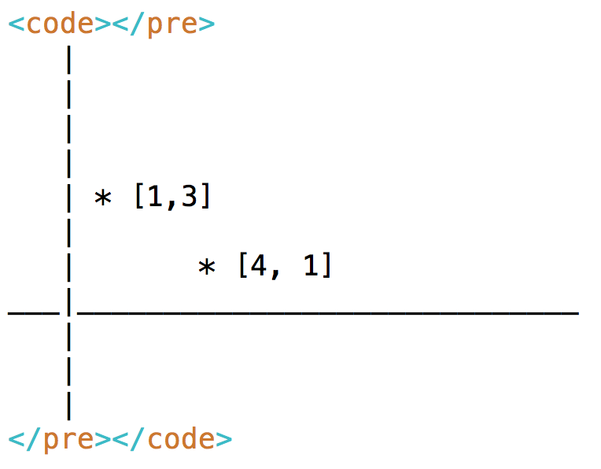
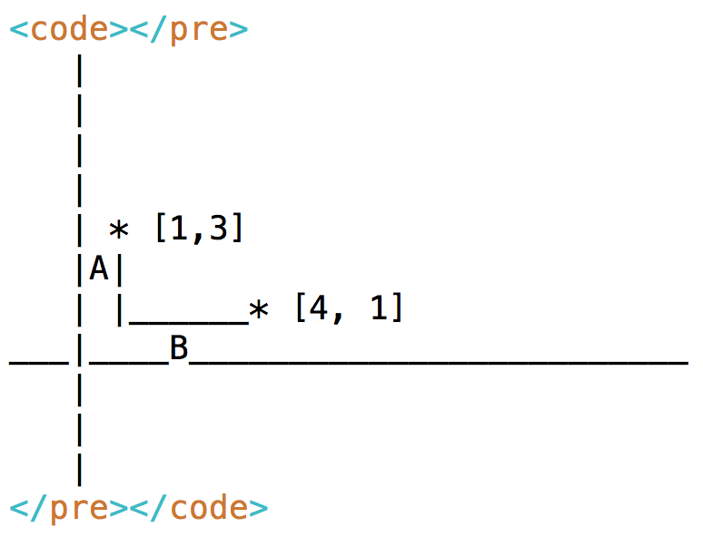

Euclidean distance is often used in conjunction with the k-means algorithim. Remember your pythagorean theorem from high school geometry? Euclidean distance is the same theorem but across N dimensions.
For example, you can calculate the distance between two points in 2D, 3D space, 4D space, and more. Let's start with a 2D example.
In the line chart above, you can see we have two data points. The first has a value of 1 for X and 3 for Y. The second has a value of 4 for X and 1 for Y.
If we were in high school geometry, we would draw lines to convert this to a triangle. Then we'd label lines A, B, and C.
Once we know those are labeled A and B, we can give them values for the length of their lines. In the chart above, A has a length of 2 and B has a length of 3.
With that information we can calculate the length of line C (the connecting line)
with the following Pythagoreum formula sqrt(A^2 + B^2) = C.
Plugging in the numbers we get sqrt(2^2 + 3^2) = C, which becomes
sqrt(4 + 9) = C, which subsequently becomes approximately
3.605 = C.
You could have also written the formula like the following.
point1 = [1,3]
point2 = [4,1]
distance = sqrt( (1-4)^2 + (3-1)^2 )
Making sense? You just used Euclidean distance to calculate the distance between two points in 2D space. Let's try it in 3 dimensions next.
In 3 dimensions, we can model our vectors as an array of 3 numbers rather than 2 numbers. [X,Y] becomes [X,Y,Z]. Let's build off the top of our last example, but add the 3D value Z.
point1 = [1,3,2]
point2 = [4,1,4]
distance = sqrt( (1-4)^2 + (3-1)^2 + (2-4)^2 )
That's it! All we had to do was add the 3rd dimension to the distance
calculation ((2-4)^2). Adding a 4th dimension is the same.
point1 = [1,3,2,8]
point2 = [4,1,4,9]
distance = sqrt( (1-4)^2 + (3-1)^2 + (2-4)^2 + (8-9)^2)
From here, you can follow that pattern to add N dimensions as necessary for your k-means algorithim.